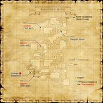

Description
Dangruf Wadi is a dungeon in Gustaberg.
Map

Involved in Quests / Missions
| Quest / Mission | Type | Starter | Location |
|---|---|---|---|
| All by Myself | General | Marin | Bastok Markets (pos=E-10) |
| As Thick as Thieves | THF AF 2 | Nanaa Mihgo | Windurst Woods (pos=J-3) |
| Breaking Stones | General | Horatius | Bastok Markets (pos=I-9) |
| Drachenfall | General | Black Mud | Bastok Mines (pos=J-7) |
| The Bare Bones | Map | Degenhard | Bastok Markets (pos=I-10) |
| Strange Apparatus | General | --- | --- |
NPCs
- Strange Apparatus
Notorious Monsters
| Name | Level | Drops | Steal | Family | Spawns | Notes |
|---|---|---|---|---|---|---|
| Chocoboleech | 24-25 | Gassan | — |  LeechesImage source LeechesImage source | — | A, L |
| Geyser Lizard | 28-30 | Lizard Egg Lizard Skin Steam Scale Mail | — |  LizardsImage source LizardsImage source | — | A, L, H |
| Teporingo | 20 | Succubus Grip | — |  RabbitsImage source RabbitsImage source | — | L, S, Sc |
Regular Monsters


References
External references describe their own server or retail rules. Documented Zenith changes take precedence.
Map credits: Map 1 — HorizonXI Wiki. Original game maps © SQUARE ENIX; redrawn maps retain the credited authorship and license.

Supplemental NPC names and exits are from the base-world snapshot; expansion conditions can affect availability.
Additional level-75 reference


Map Acquisition
|
The Dangruf Wadi is a small gorge located near Mount Dangruf, an active volcano. Due to the extreme heat caused by the magma under the surface, numerous natural geysers can be found in this area. Long ago, the Galka often would come to bathe in the hot springs here to relieve the aches and pains caused by the long hours they worked in the mines. Connecting Areas |

Involved in Quests/Missions
| Quest | Type | Starter | Location |
| As Thick as Thieves | THF AF 2 | Nanaa Mihgo | Windurst Woods J-3 |
| All by Myself | General | Marin | Bastok Markets E-10 |
| Breaking Stones | General | Horatius | Bastok Markets I-9 |
| Drachenfall | General | Black Mud | Bastok Mines J-7 |
| The Bare Bones | General | Degenhard | Bastok Markets I-10 |
| Strange Apparatus | General | --- | --- |
| Mission | Country | Starter | Location |
| Mission 1-2: A Geological Survey | Bastok | Gate Guard | Bastok |
| Mission 2-2: Wading Beasts | Bastok | Gate Guard | Bastok |
Coffer/Chest Contents
|
NPCs Found Here
Weather
Fishing
|
Notorious Monsters Found Here
|
Name |
Level |
Drops |
Steal |
Family |
Spawns |
Notes | |||||||
Chocoboleech NM
|
24-25 | Leech | 1 | A, L | |||||||||
| Geyser Lizard NM | 28-30 | Lizard | 1 | A, L, H | |||||||||
|
HP = Detects Low HP; M = Detects Magic; Sc = Follows by Scent; T(S) = True-sight; T(H) = True-hearing JA = Detects job abilities; WS = Detects weaponskills; Z(D) = Asleep in Daytime; Z(N) = Asleep at Nighttime | |||||||||||||
Mobs Found Here
|
Name |
Level |
Drops |
Steal |
Family |
Spawns |
Notes | |||||||
Coral Crab
|
10-12 | Crab | 1 | A, H | |||||||||
| Giant Grub | 9-12 | Worm | 19 | A, H | |||||||||
| Witchetty Grub | 21-23 | Worm | ?? | H , L | |||||||||
| Goblin Ambusher | 12-16 | Goblin | 39 | A, L, S | |||||||||
| Goblin Butcher | 12-16 | Goblin | 39 | A, L, S | |||||||||
| Goblin Fisher | 5-8 | Goblin | 12 | A, L, S | |||||||||
| Goblin Gambler | 21-23 | Goblin | 17 | A, L, S | |||||||||
| Goblin Leecher | 21-23 | Goblin | 17 | A, L, S | |||||||||
| Goblin Mugger | 21-23 | Goblin | 16 | A, L, S | |||||||||
| Goblin Thug | 5-8 | Goblin | 26 | A, L, S | |||||||||
| Goblin Tinkerer | 12-16 | Goblin | 39 | A, L, S | |||||||||
| Goblin Weaver | 5-8 | Goblin | 25 | A, L, S | |||||||||
| Hoarder Hare | 6-8 | Rabbit | 12 | L, S, Sc | |||||||||
Land Crab
|
5-7 | Crab | 1 | A, H | |||||||||
| Rock Lizard | 5-8 | Lizard | 26 | L, H | |||||||||
| Snipper | 16-20 | Crab | 8 | L, H | |||||||||
| Steam Lizard | 16-20 | Lizard | 12 | L, H | |||||||||
| Stickpin | 7-9 | Leech | 6 | L, H | |||||||||
| Stone Eater | 3-5 | Worm | 6 | H | |||||||||
Thread Leech
|
21-23 | Leech | 1 | A, H | |||||||||
| Wadi Crab | 7-9 | Crab | 8 | L, H | |||||||||
| Wadi Hare | 11-14 | Rabbit | 26 | L, S | |||||||||
| Wadi Leech | 11-14 | Leech | 23 | L, H | |||||||||
Wadi Leech
|
15-17 | Leech | 1 | A, H | |||||||||
|
HP = Detects Low HP; M = Detects Magic; Sc = Follows by Scent; T(S) = True-sight; T(H) = True-hearing JA = Detects job abilities; WS = Detects weaponskills; Z(D) = Asleep in Daytime; Z(N) = Asleep at Nighttime | |||||||||||||
Adapted from Eden Wiki: Dangruf Wadi · Contributors and history · CC BY-SA 4.0. Revision 45429. Layout, links and optional background text adapted for Zenith.